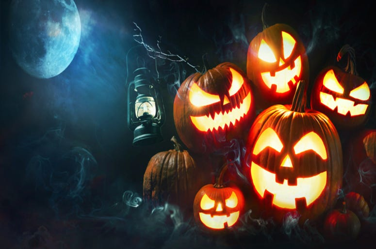

Halloween
Halloween là lễ hội thường niên diễn ra vào cuối tháng 10 đầu tháng 11, trong lễ hội này người ta phải hoá trang
và ăn mặc gớm ghiếc. nhưng đó là lễ hội để tưởng niệm cái gì? Tại sao người ta phải hoá trang và ăn mặc ghớm
ghiếc đến thế? Phải chăng đó là nghi lễ thờ quỷ dữ hay đó là tàn tích của những lễ nghi tà giáo từ thời xa xưa?
Có nhiều nguồn gốc halloween:
-
Lễ hội Halloween ngày nay bắt nguồn từ dân tộc Celt, là một dân tộc sống cách đây hơn 2000 năm trên các vùng
đất mà bây giờ là Anh quốc, Ireland và miền Bắc nước Pháp. Dân tộc Celt bắt đầu năm mới vào ngày 1 tháng 11
Dương Lịch.Ngày lễ hội này báo hiệu sự bắt đầu của mùa lạnh, của những ngày tối tăm thường được liên kết với
sự tàn tạ và sự chết của loài người. Dân tộc Celt tin rằng Samhain cho phép những linh hồn người chết được
trở về nhà trên trần gian vào đêm hôm đó.

Vào năm 43 (Tây lịch kỷ nguyên), người La Mã chinh phục vùng đất của dân tộc Celt và cai trị khoảng 400 năm
. Trong giai đoạn này có hai lễ hội Samhain của dân tộc Celt. Một trong hai lễ đó là FẺALIA được cử hành vào
cuối tháng Mười để vinh danh những ngưòi đã chết, lễ thứ hai dành cho Pomona, nữ thần La Mã về cây và quả.
Có lẽ vì nữ thần Pomona mà quả táo (apple) đã được kết hợp vào lễ hội Halloween. Tại Anh Quốc, Halloween đôi
khi được gọi là Nutcrack Night or Snap Apple Night vì mọi người trong gia đình ngồi quanh lò sưởi kể chuyện
và ăn đậu phụng rang hoặc nhai "táo".
Vào ngày "Các vong hồn," những người nghèo đi "khất thực cô hồn" (went-a-souling) và họ sẽ được bố thí bánh
trái gọi là "soul cakes" (bánh vong hồn) để họ hứa là sẽ cầu nguyện cho "các vong hồn."
Halloween đến Mỹ do những di dân đầu tiên, đa số đến từ Anh Quốc và một số từ các vùng thuộc dân tộc Celt,
họ đã đem qua Mỹ khá nhiều phong tục khác nhau. Nhưng vì nhiều lý do, mãi đến thập niên 1800 mới trở thành
tục lệ được nhiều người hưởng ứng.
-
Theo truyền thuyết của nước Ái Nhĩ Lan (Ireland) thì từ ngữ "Jack-ó-lanterns" đến từ một người có tên là
Jack. Jack là một chàng thiếu niên đã chết nhưng linh hồn không được phép vào Thiên Đàng vì lý do: lúc sống,
anh ta vốn là một người tham lam, bủn xỉn, thường cất giấu tiền bạc, keo kiệt không hề bố thí cho ai một
chút gì. Thế nhưng anh ta lại cũng không thể vào Địa Ngục vì lúc còn sống anh ta đã từng chơi đùa với ma
quỷ, nên quỷ không bắt anh.
Chuyện kể rằng: một hôm có con quỷ đến quấy phá một vùng dân cư, chẳng may bị báo động, người ta đến cầu cứu các vị tu sĩ đem các vật thánh đến "yểm" và "khóa các cửa" ra vào. Thế là con quỷ bị bắt... Jack đã nhận ra đó là con quỷ thường vui đùa với mình và Jack đã tìm cách gỡ vật "yểm ma quỷ" mở đường cho quỷ chạy thoát.
Để đền ơn cứu mạng, quỷ hứa với Jack là sẽ không bắt hồn Jack về Địa Ngục. Do đó, khi Jack chết vì một tai nạn, hồn Jack bị Thiên Đường từ chối. Jack liền tìm đến Địa Ngục, nhưng quỷ không cho vào... vì lời hứa trước. Thấy Jack lạnh lùng khổ sở, quỷ bèn lấy một ít than hồng ở Địa Ngục bỏ vào trong ruột một quả bí ngô và đưa cho Jack để sưởi ấm... trên đường trở lại trần gian. Để cho không khí thông vào nuôi lửa, Jack phải đục thủng quả bí ngô.. và ánh lửa từ trong đã chiếu ra soi sáng nẻo đường lang thang của Jack. Có lẽ Jack phải cầm đèn đi lang thang trên mặt đất cho đến ngày phán xét cuối cùng của nhân loại.
Trong ý nghĩa nhân bản, Halloween và Rằm tháng Bảy Âm lịch ở Việt Nam ta có thể xem như là ngày hai cõi Âm, Dương hội ngộ trong niềm thương cảm bao la.. Cuộc hội ngộ này đã phần nào nói lên cái triết lý "Âm, Dương nhất lý, Sinh tử đạo đồng" nơi gặp gỡ của tâm hồn nhân bản đông tây.
Thật vậy, tưởng tượng và hư cấu không thể nào bắt nguồn từ cái không không mà phải khởi đi từ một thực tại nào đó. Như vậy thì, phải chăng, "Jack Ó Lantern" chỉ là hình tượng của bao nhiêu thanh thiếu niên trong cuộc đời hiện thực, vì môi trường gia đình, xã hội, giáo dục hoặc vì những thúc bách thầm kín nào đó đã vô tình "đùa chơi với quỷ." Và vì đó họ đã lỡ tay đánh mất tuổi thơ, vì ham vui, vì lòng trắc ẩn, thương xót, vì tình bạn bè... mà đã vô tình vi phạm quy ước xã hội, lỗi với giáo điều tín ngưỡng, mang tội với gia đình... Rồi bị xã hội thẳng tay loại trừ.